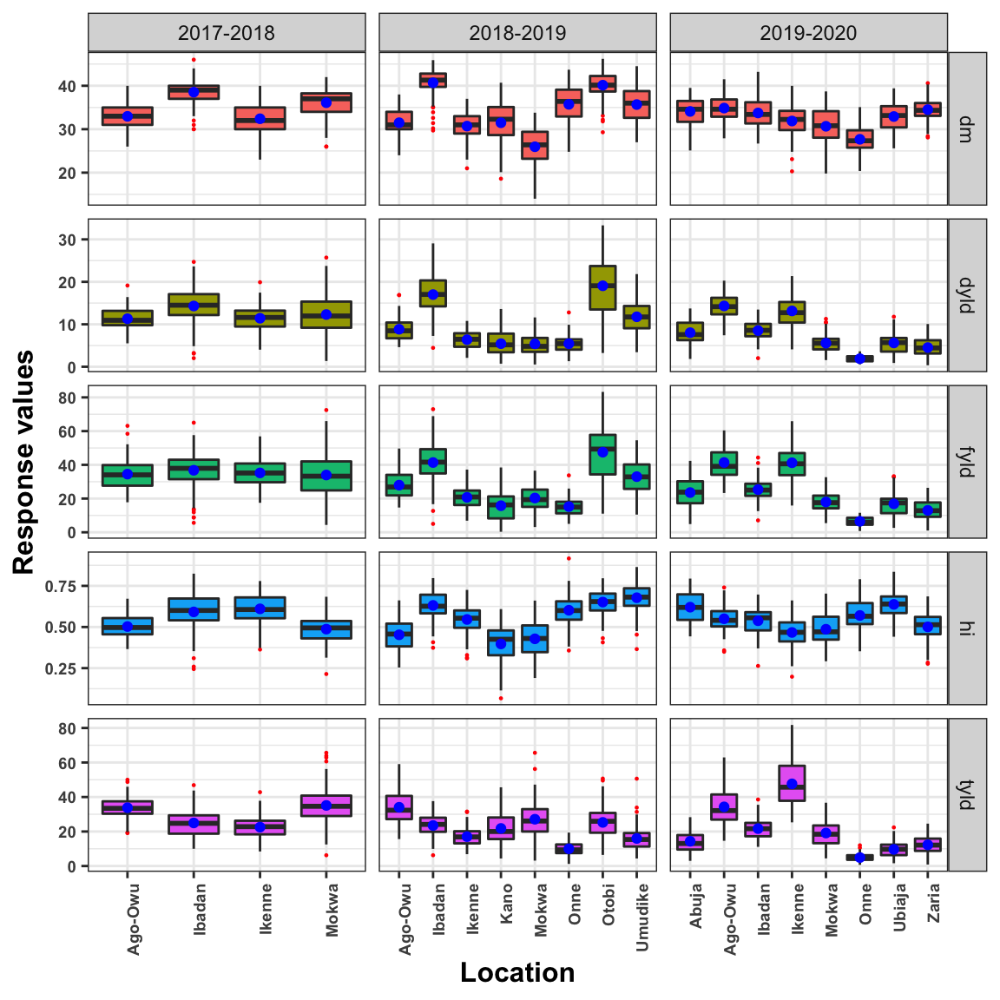
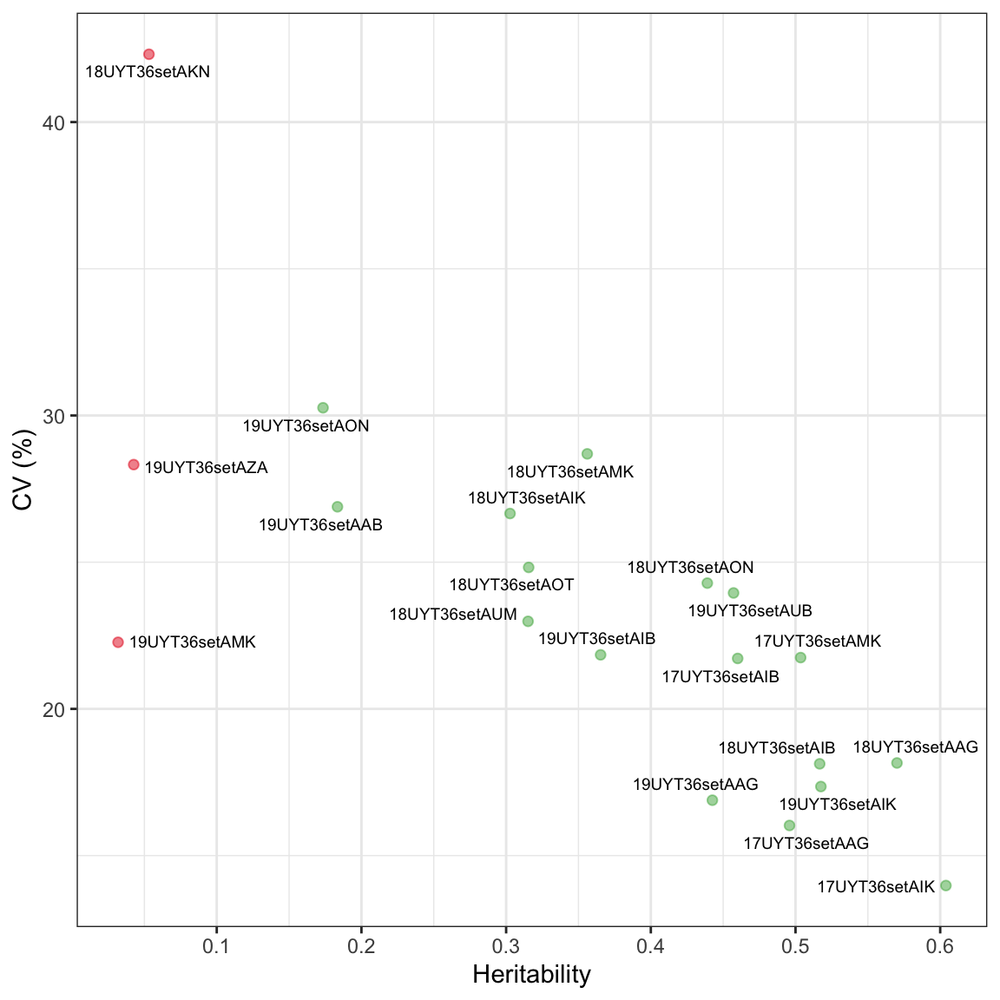
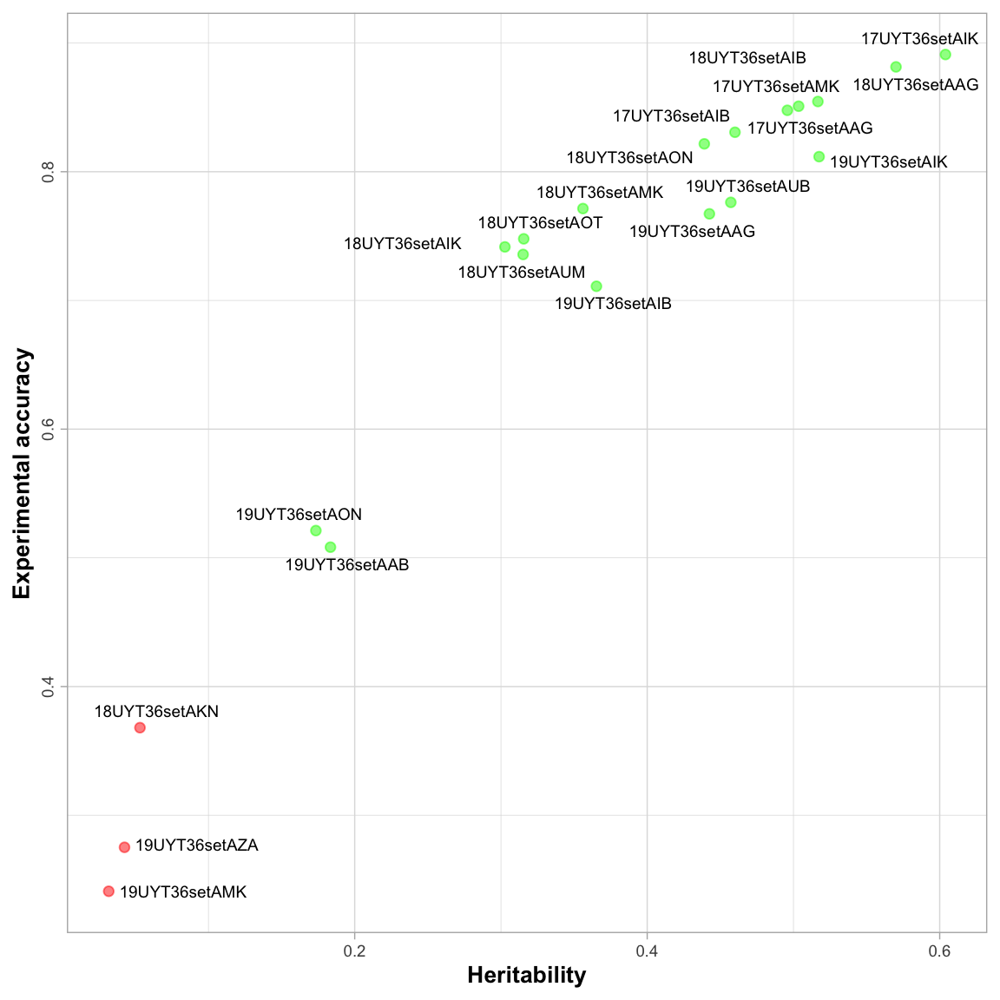
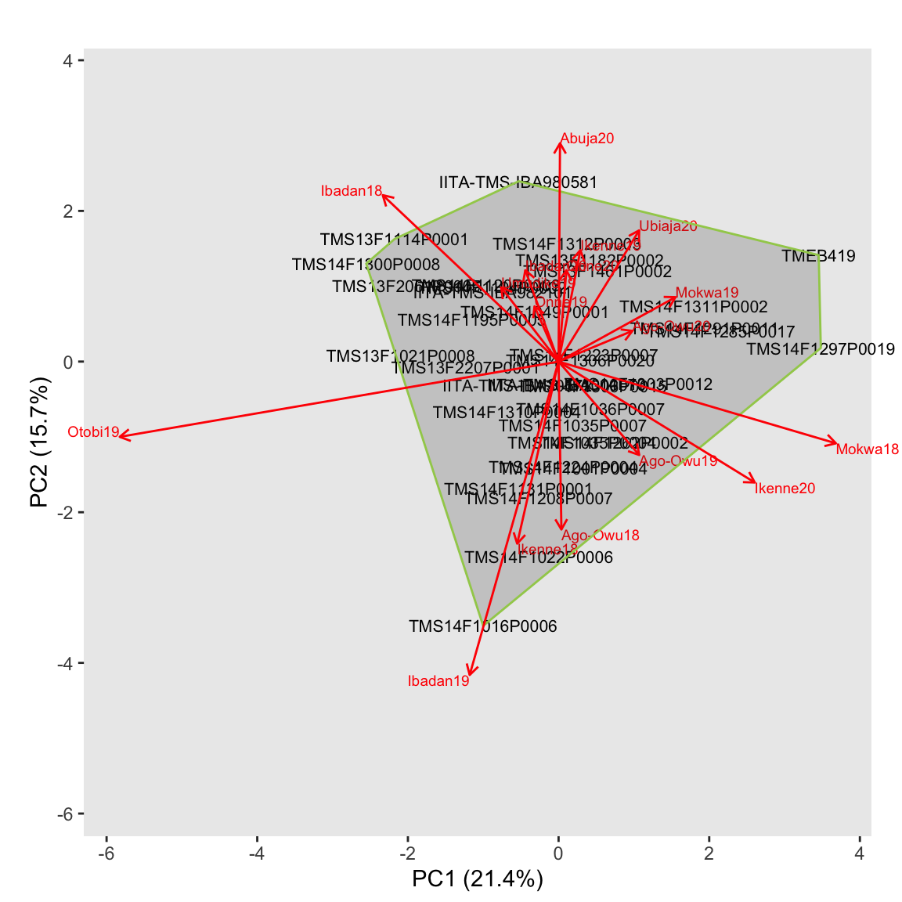
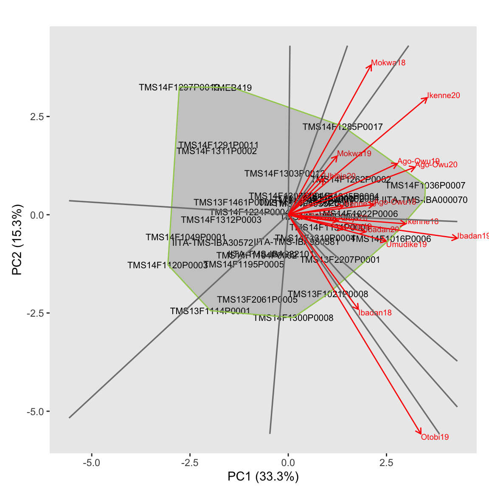
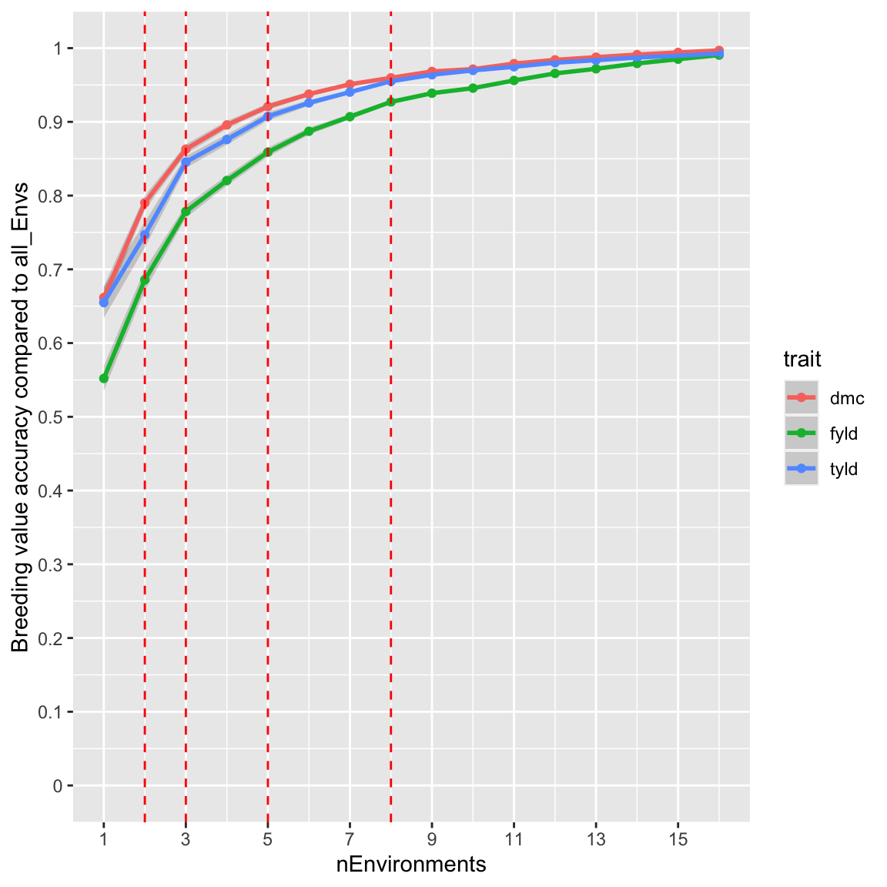
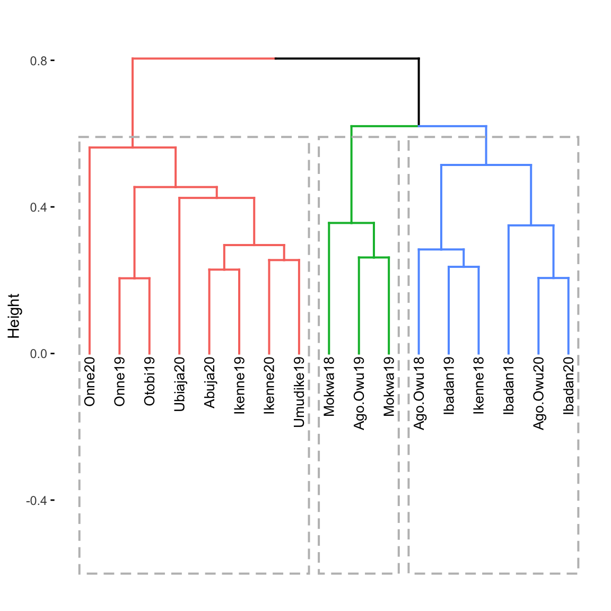

Last updated: 2021-10-26
Checks: 6 1
Knit directory: classical_analysis_GxE/
This reproducible R Markdown analysis was created with workflowr (version 1.6.2). The Checks tab describes the reproducibility checks that were applied when the results were created. The Past versions tab lists the development history.
The R Markdown is untracked by Git. To know which version of the R Markdown file created these results, you’ll want to first commit it to the Git repo. If you’re still working on the analysis, you can ignore this warning. When you’re finished, you can run wflow_publish to commit the R Markdown file and build the HTML.
Great job! The global environment was empty. Objects defined in the global environment can affect the analysis in your R Markdown file in unknown ways. For reproduciblity it’s best to always run the code in an empty environment.
The command set.seed(20211022) was run prior to running the code in the R Markdown file. Setting a seed ensures that any results that rely on randomness, e.g. subsampling or permutations, are reproducible.
Great job! Recording the operating system, R version, and package versions is critical for reproducibility.
Nice! There were no cached chunks for this analysis, so you can be confident that you successfully produced the results during this run.
Great job! Using relative paths to the files within your workflowr project makes it easier to run your code on other machines.
Great! You are using Git for version control. Tracking code development and connecting the code version to the results is critical for reproducibility.
The results in this page were generated with repository version 2107ab3. See the Past versions tab to see a history of the changes made to the R Markdown and HTML files.
Note that you need to be careful to ensure that all relevant files for the analysis have been committed to Git prior to generating the results (you can use wflow_publish or wflow_git_commit). workflowr only checks the R Markdown file, but you know if there are other scripts or data files that it depends on. Below is the status of the Git repository when the results were generated:
Ignored files:
Ignored: .DS_Store
Ignored: data/.DS_Store
Ignored: output/.DS_Store
Untracked files:
Untracked: analysis/classical_analysis_GE.Rmd
Untracked: code/GE_decompose_to_GLY.sas
Untracked: code/GxE_ErrorVar_Hom_vs_Het.sas
Untracked: code/GxE_YesNo.sas
Untracked: code/ammiModel.R
Untracked: code/fwModel.R
Untracked: code/ggeModel.R
Untracked: code/run_main_program_GxE_analysis.sas
Untracked: code/summaryStats.sas
Untracked: code/two_way_GE_data.sas
Untracked: data/combined_trial.csv
Untracked: output/AMMI_stability.csv
Untracked: output/envSpecificBLUP.csv
Untracked: output/gen_env_trait.csv
Untracked: output/narrowPhenoDat.csv
Untracked: output/raw_pheno_trial_summary.csv
Untracked: output/traitTPEGainList.csv
Note that any generated files, e.g. HTML, png, CSS, etc., are not included in this status report because it is ok for generated content to have uncommitted changes.
There are no past versions. Publish this analysis with wflow_publish() to start tracking its development.
The combined GxE data is imported into R and tranposed from wide to narrow format for easy visualization of key variables of interest.
# Import the combined raw data in wide format
phenoDat <- read.csv(file="data/combined_trial.csv", header=TRUE)
# Subset key variable and transpose the imported data in wide format to a narrow format
narrowPhenoDat <- phenoDat %>%
dplyr::select(loc, year, env, trial, rep, gen,prop_hav, fyld, dyld, hi, tyld, dm) %>%
gather(key = trait, value = y, -c(loc, year, env, trial, rep, gen, prop_hav))
# write the narrow format combined GxE data file to a working directory data
write.csv(narrowPhenoDat,file="output/narrowPhenoDat.csv", row.names=FALSE)
# coerce variable to factors
narrowPhenoDat$trial <- as.factor(narrowPhenoDat$trial)
narrowPhenoDat$loc <- as.factor(narrowPhenoDat$loc)
narrowPhenoDat$year <- as.factor(narrowPhenoDat$year)
narrowPhenoDat$env <- as.factor(narrowPhenoDat$env)
narrowPhenoDat$trait <- as.factor(narrowPhenoDat$trait)
narrowPhenoDat$year <- factor(narrowPhenoDat$year, levels = c("2018", "2019", "2020"), labels = c("2017-2018", "2018-2019", "2019-2020"))This is a boxplot showing the distribution of key traits of interest across environments i.e. location and year combination
boxplot_env_trait <- ggplot(data = narrowPhenoDat , aes(x=loc,y=y, fill=trait)) +
geom_boxplot( stat = "boxplot", outlier.colour = "red", outlier.shape = 16, outlier.size = 0.5, na.rm=TRUE) +
stat_summary(fun=mean, colour="blue", geom="point", na.rm = TRUE) +
labs(x= "Location", y= "Response values") + theme_bw() +
theme(axis.title = element_text(colour="black",face="bold", size=12),
plot.title = element_text(hjust = 0.5,lineheight=.5,colour="black",face="bold", size=12),
axis.text = element_text(face="bold", size=7), axis.text.x = element_text(angle = 90, hjust = 1),legend.position="none")+
facet_grid(trait~year, scales = "free")
# save the plot to a file
#ggsave("boxplot_env_trait.jpeg",height=5, width=8, units="in", dpi=300)
print(boxplot_env_trait)
This is a diagnostics plot of CV vs broad-sense heritability of each trial. The input file to generate this plot is a summary statistics of raw data resulting from using SAS application.
# read summary statistics output file
stats.output <- read.csv(file="output/raw_pheno_trial_summary.csv", header=T)
# filter the trait of interest from the summary output file
stats.output <- subset(stats.output, trait=="fyld") # subset for fresh root yield trait
cv_vs_H2 <- ggplot(data = stats.output,
aes(x = H2,
y = cv)) +
geom_point(color = ifelse(stats.output$cv > 40.5 | stats.output$H2 < 0.05, "#E41A1C", "#4DAF4A"),size = 1.7,
alpha = 0.5) +
scale_color_brewer(palette = "Set1") +
geom_text_repel(aes(x = H2,
y = cv,
label = trial),
size = 2.5, segment.colour = NA) +
labs(x = "Heritability",
y = "CV (%)") +
theme_bw() +
scale_x_continuous(breaks = seq(from = 0.0, to = 0.70, by = 0.1))
theme(plot.title = element_text(hjust = 0.5),
axis.text.x = element_text(size = 7, hjust = 0.5),
axis.text.y = element_text(size = 7, hjust = 0.5, angle = 90),
axis.title.y = element_text(size = 10, face = "bold"),
axis.title.x = element_text(size = 10, face = "bold"),
legend.background = element_rect(fill = "NA", color = "black", size = 0.5),
legend.text = element_text(size = 7),
legend.title = element_text(size = 10, face = "bold"),
legend.position = "right"
)
# save the plot to a file
#ggsave("cv_vs_H2.jpeg",height=5, width=8, units="in", dpi=300)
# Print the heatmap
print(cv_vs_H2)
This is a diagnostics plot of experimental accuracy vs broad-sense heritability of the trials. The input file to generate this plot is a summary statistics of raw data resulting from using SAS application.
# filter the trait of interest from the summary output file
Ac_H2_output <- subset(stats.output, trait=="fyld", select= c("trial","trait","H2","Accr"))
Ac_vs_H2 <- ggplot(data = Ac_H2_output,
aes(x = H2,
y = Accr)) +
geom_point(color = ifelse(Ac_H2_output$Accr < 0.40 | Ac_H2_output$H2 < 0.05, "red", "green"),size = 1.7,
alpha = 0.5) +
scale_color_brewer(palette = "Set1") +
geom_text_repel(aes(x = H2,
y = Accr,
label = trial),
size = 2.5, segment.colour = NA) +
labs(x = "Heritability",
y = "Experimental accuracy") +
theme_light() +
theme(plot.title = element_text(hjust = 0.5),
axis.text.x = element_text(size = 7, hjust = 0.5),
axis.text.y = element_text(size = 7, hjust = 0.5, angle = 90),
axis.title.y = element_text(size = 10, face = "bold"),
axis.title.x = element_text(size = 10, face = "bold"),
legend.background = element_rect(fill = "NA", color = "black", size = 0.5),
legend.text = element_text(size = 7),
legend.title = element_text(size = 10, face = "bold"),
legend.position = "right"
)
# output the plot to a file
#ggsave("Ac_vs_H2.jpeg",height=5, width=8, units="in", dpi=300)
print(Ac_vs_H2) # output the plot
This chunk called a defined function fwModel to fit FW model for a trait of interest.The script reads two-way GxE adjusted means output from fitting linear mixed using SAS application.
From this point, the analysis was based on 17 trials after data quality control where 3 trials are excluded as shown in red data point in diagnostic plots.
Note: The function can be invoked to fit FW model for any trait of interest within the input data file.
# import the two-way GxE table ouput resulting from using SAS application
two_wayGxE <- read.csv(file="output/gen_env_trait.csv", header=T)
## Create a trial data TD object
setATD <- statgenSTA::createTD(data = two_wayGxE, genotype = "gen", trial = "env")
# Invoke a defined funtion fwMpdel from source script to fit FW model
source("code/fwModel.R")
# Example: Invoke the defined function to fit FW model for fresh root yield (fyld)
fwOutput <- fwModel(traitName = "fyld")
print(fwOutput)$anovaSumm
Environmental effects
=====================
trial envEff se_envEff envMean se_envMean rank
1 Abuja20 -6.467310 1.100566 23.032965 1.683335 12
2 Ago-Owu18 4.927106 1.100566 34.411122 1.585379 7
3 Ago-Owu19 -1.464688 1.100566 28.028448 1.457129 10
4 Ago-Owu20 11.624983 1.100566 41.099441 2.118572 3
5 Ibadan18 7.956384 1.171105 37.436078 1.791116 5
6 Ibadan19 12.243283 1.117308 41.716859 2.179782 2
7 Ibadan20 -4.226424 1.117308 25.270653 1.550873 11
8 Ikenne18 5.871956 1.100566 35.354623 1.641616 6
9 Ikenne19 -8.829464 1.100566 20.674181 1.865190 13
10 Ikenne20 11.574479 1.100566 41.049009 2.113636 4
11 Mokwa18 4.003067 1.100566 33.488402 1.538445 8
12 Mokwa19 -9.341979 1.100566 20.162398 1.909243 14
13 Onne19 -14.130161 1.100566 15.381047 2.377248 16
14 Onne20 -22.773220 1.123701 6.750322 3.368022 17
15 Otobi19 18.152300 1.100566 47.617445 2.820327 1
16 Ubiaja20 -12.731857 1.100566 16.777357 2.231795 15
17 Umudike19 3.611545 1.100566 33.097438 1.521150 9
Anova
=====
Df Sum Sq Mean Sq F value Pr(>F)
genotype 35 7974 227.8 6.3387 < 2e-16 ***
trial 16 70823 4426.4 123.1602 < 2e-16 ***
Sensitivities 35 2092 59.8 1.6633 0.01107 *
Residual 518 18617 35.9
Total 604 99506 164.7
---
Signif. codes: 0 '***' 0.001 '**' 0.01 '*' 0.05 '.' 0.1 ' ' 1
Most sensitive genotypes
========================
genotype sens rank se_sens genMean se_genMean MSdeviation
TMS14F1131P0001 1.287679 1 0.1341826 31.98318 1.479164 44.28055
TMS14F1016P0006 1.277815 2 0.1319175 34.57602 1.433407 60.69354
TMS14F1036P0007 1.263991 3 0.1319175 37.43549 1.433407 23.25279
TMS14F1208P0007 1.255757 4 0.1341826 30.02317 1.479164 28.65639
TMS14F1022P0006 1.247755 5 0.1319175 32.65976 1.433407 39.48910
$genSens
genotype sens rank se_sens genMean se_genMean MSdeviation
20 TMS14F1131P0001 1.2876794 1 0.1341826 31.98318 1.479164 44.28055
13 TMS14F1016P0006 1.2778147 2 0.1319175 34.57602 1.433407 60.69354
17 TMS14F1036P0007 1.2639906 3 0.1319175 37.43549 1.433407 23.25279
23 TMS14F1208P0007 1.2557573 4 0.1341826 30.02317 1.479164 28.65639
14 TMS14F1022P0006 1.2477549 5 0.1319175 32.65976 1.433407 39.48910
6 TMS13F1021P0008 1.2033334 6 0.1319175 31.46351 1.433407 35.88813
12 TMS14F1001P0004 1.1848579 7 0.1319175 31.58859 1.433407 28.82307
1 IITA-TMS-IBA000070 1.1803258 8 0.1319175 37.88854 1.433407 23.26122
16 TMS14F1035P0007 1.1376218 9 0.1319175 30.65199 1.433407 31.02269
34 TMS14F1310P0004 1.1292160 10 0.1319175 30.52815 1.433407 32.05043
30 TMS14F1300P0008 1.0859954 11 0.1319175 29.84727 1.433407 52.58498
26 TMS14F1262P0002 1.0855638 12 0.1319175 33.18119 1.433407 41.40754
15 TMS14F1035P0004 1.0756546 13 0.1319175 32.23079 1.433407 20.56124
11 TMS13F2207P0001 1.0754062 14 0.1319175 32.74140 1.433407 27.22990
25 TMS14F1224P0004 1.0510963 15 0.1409578 26.00119 1.588021 26.20883
10 TMS13F2061P0005 1.0390170 16 0.1319175 27.67081 1.433407 42.45372
22 TMS14F1195P0005 1.0226105 17 0.1319175 26.40774 1.433407 15.34646
33 TMS14F1306P0020 0.9996033 18 0.1319175 30.23847 1.433407 51.26726
31 TMS14F1303P0012 0.9915816 19 0.1319175 29.53255 1.433407 17.91818
8 TMS13F1182P0002 0.9884806 20 0.1319175 32.09074 1.433407 28.67014
24 TMS14F1223P0007 0.9802780 21 0.1319175 31.14726 1.433407 22.40527
32 TMS14F1306P0015 0.9554224 22 0.1319175 29.36176 1.433407 19.80972
7 TMS13F1114P0001 0.9529336 23 0.1319175 25.20792 1.433407 51.17318
18 TMS14F1049P0001 0.9212336 24 0.1548820 23.18840 1.493363 13.69706
2 IITA-TMS-IBA30572 0.9028070 25 0.1319175 25.07432 1.433407 29.46789
27 TMS14F1285P0017 0.8869906 26 0.1319175 33.31568 1.433407 41.75146
3 IITA-TMS-IBA980581 0.8786841 27 0.1319175 31.21784 1.433407 55.26628
21 TMS14F1194P0002 0.8559259 28 0.1319175 28.14859 1.433407 15.96342
35 TMS14F1311P0002 0.8382097 29 0.1319175 25.25178 1.433407 37.48949
4 IITA-TMS-IBA982101 0.8357505 30 0.1319175 29.00460 1.433407 55.43071
36 TMS14F1312P0003 0.8161723 31 0.1319175 26.05182 1.433407 21.57253
28 TMS14F1291P0011 0.8155015 32 0.1548820 25.49248 1.493363 38.28012
9 TMS13F1461P0002 0.7885391 33 0.1319175 27.03859 1.433407 30.65928
19 TMS14F1120P0003 0.7175565 34 0.1319175 22.50767 1.433407 34.89031
5 TMEB419 0.6624791 35 0.1319175 27.45304 1.433407 57.29578
29 TMS14F1297P0019 0.6336527 36 0.1319175 23.47539 1.433407 58.49504
$mostSensGen
genotype sens rank se_sens genMean se_genMean MSdeviation
20 TMS14F1131P0001 1.2876794 1 0.1341826 31.98318 1.479164 44.28055
13 TMS14F1016P0006 1.2778147 2 0.1319175 34.57602 1.433407 60.69354
17 TMS14F1036P0007 1.2639906 3 0.1319175 37.43549 1.433407 23.25279
23 TMS14F1208P0007 1.2557573 4 0.1341826 30.02317 1.479164 28.65639
14 TMS14F1022P0006 1.2477549 5 0.1319175 32.65976 1.433407 39.48910
6 TMS13F1021P0008 1.2033334 6 0.1319175 31.46351 1.433407 35.88813
12 TMS14F1001P0004 1.1848579 7 0.1319175 31.58859 1.433407 28.82307
1 IITA-TMS-IBA000070 1.1803258 8 0.1319175 37.88854 1.433407 23.26122
16 TMS14F1035P0007 1.1376218 9 0.1319175 30.65199 1.433407 31.02269
34 TMS14F1310P0004 1.1292160 10 0.1319175 30.52815 1.433407 32.05043
30 TMS14F1300P0008 1.0859954 11 0.1319175 29.84727 1.433407 52.58498
26 TMS14F1262P0002 1.0855638 12 0.1319175 33.18119 1.433407 41.40754
15 TMS14F1035P0004 1.0756546 13 0.1319175 32.23079 1.433407 20.56124
11 TMS13F2207P0001 1.0754062 14 0.1319175 32.74140 1.433407 27.22990
25 TMS14F1224P0004 1.0510963 15 0.1409578 26.00119 1.588021 26.20883
10 TMS13F2061P0005 1.0390170 16 0.1319175 27.67081 1.433407 42.45372
22 TMS14F1195P0005 1.0226105 17 0.1319175 26.40774 1.433407 15.34646
33 TMS14F1306P0020 0.9996033 18 0.1319175 30.23847 1.433407 51.26726
31 TMS14F1303P0012 0.9915816 19 0.1319175 29.53255 1.433407 17.91818
8 TMS13F1182P0002 0.9884806 20 0.1319175 32.09074 1.433407 28.67014
24 TMS14F1223P0007 0.9802780 21 0.1319175 31.14726 1.433407 22.40527
32 TMS14F1306P0015 0.9554224 22 0.1319175 29.36176 1.433407 19.80972
7 TMS13F1114P0001 0.9529336 23 0.1319175 25.20792 1.433407 51.17318
18 TMS14F1049P0001 0.9212336 24 0.1548820 23.18840 1.493363 13.69706
2 IITA-TMS-IBA30572 0.9028070 25 0.1319175 25.07432 1.433407 29.46789
27 TMS14F1285P0017 0.8869906 26 0.1319175 33.31568 1.433407 41.75146
3 IITA-TMS-IBA980581 0.8786841 27 0.1319175 31.21784 1.433407 55.26628
21 TMS14F1194P0002 0.8559259 28 0.1319175 28.14859 1.433407 15.96342
35 TMS14F1311P0002 0.8382097 29 0.1319175 25.25178 1.433407 37.48949
4 IITA-TMS-IBA982101 0.8357505 30 0.1319175 29.00460 1.433407 55.43071
36 TMS14F1312P0003 0.8161723 31 0.1319175 26.05182 1.433407 21.57253
28 TMS14F1291P0011 0.8155015 32 0.1548820 25.49248 1.493363 38.28012
9 TMS13F1461P0002 0.7885391 33 0.1319175 27.03859 1.433407 30.65928
19 TMS14F1120P0003 0.7175565 34 0.1319175 22.50767 1.433407 34.89031
5 TMEB419 0.6624791 35 0.1319175 27.45304 1.433407 57.29578
29 TMS14F1297P0019 0.6336527 36 0.1319175 23.47539 1.433407 58.49504
$leastSensGen
genotype sens rank se_sens genMean se_genMean MSdeviation
29 TMS14F1297P0019 0.6336527 36 0.1319175 23.47539 1.433407 58.49504
5 TMEB419 0.6624791 35 0.1319175 27.45304 1.433407 57.29578
19 TMS14F1120P0003 0.7175565 34 0.1319175 22.50767 1.433407 34.89031
9 TMS13F1461P0002 0.7885391 33 0.1319175 27.03859 1.433407 30.65928
28 TMS14F1291P0011 0.8155015 32 0.1548820 25.49248 1.493363 38.28012
36 TMS14F1312P0003 0.8161723 31 0.1319175 26.05182 1.433407 21.57253
4 IITA-TMS-IBA982101 0.8357505 30 0.1319175 29.00460 1.433407 55.43071
35 TMS14F1311P0002 0.8382097 29 0.1319175 25.25178 1.433407 37.48949
21 TMS14F1194P0002 0.8559259 28 0.1319175 28.14859 1.433407 15.96342
3 IITA-TMS-IBA980581 0.8786841 27 0.1319175 31.21784 1.433407 55.26628
27 TMS14F1285P0017 0.8869906 26 0.1319175 33.31568 1.433407 41.75146
2 IITA-TMS-IBA30572 0.9028070 25 0.1319175 25.07432 1.433407 29.46789
18 TMS14F1049P0001 0.9212336 24 0.1548820 23.18840 1.493363 13.69706
7 TMS13F1114P0001 0.9529336 23 0.1319175 25.20792 1.433407 51.17318
32 TMS14F1306P0015 0.9554224 22 0.1319175 29.36176 1.433407 19.80972
24 TMS14F1223P0007 0.9802780 21 0.1319175 31.14726 1.433407 22.40527
8 TMS13F1182P0002 0.9884806 20 0.1319175 32.09074 1.433407 28.67014
31 TMS14F1303P0012 0.9915816 19 0.1319175 29.53255 1.433407 17.91818
33 TMS14F1306P0020 0.9996033 18 0.1319175 30.23847 1.433407 51.26726
22 TMS14F1195P0005 1.0226105 17 0.1319175 26.40774 1.433407 15.34646
10 TMS13F2061P0005 1.0390170 16 0.1319175 27.67081 1.433407 42.45372
25 TMS14F1224P0004 1.0510963 15 0.1409578 26.00119 1.588021 26.20883
11 TMS13F2207P0001 1.0754062 14 0.1319175 32.74140 1.433407 27.22990
15 TMS14F1035P0004 1.0756546 13 0.1319175 32.23079 1.433407 20.56124
26 TMS14F1262P0002 1.0855638 12 0.1319175 33.18119 1.433407 41.40754
30 TMS14F1300P0008 1.0859954 11 0.1319175 29.84727 1.433407 52.58498
34 TMS14F1310P0004 1.1292160 10 0.1319175 30.52815 1.433407 32.05043
16 TMS14F1035P0007 1.1376218 9 0.1319175 30.65199 1.433407 31.02269
1 IITA-TMS-IBA000070 1.1803258 8 0.1319175 37.88854 1.433407 23.26122
12 TMS14F1001P0004 1.1848579 7 0.1319175 31.58859 1.433407 28.82307
6 TMS13F1021P0008 1.2033334 6 0.1319175 31.46351 1.433407 35.88813
14 TMS14F1022P0006 1.2477549 5 0.1319175 32.65976 1.433407 39.48910
23 TMS14F1208P0007 1.2557573 4 0.1341826 30.02317 1.479164 28.65639
17 TMS14F1036P0007 1.2639906 3 0.1319175 37.43549 1.433407 23.25279
13 TMS14F1016P0006 1.2778147 2 0.1319175 34.57602 1.433407 60.69354
20 TMS14F1131P0001 1.2876794 1 0.1341826 31.98318 1.479164 44.28055A defined function ammiModel was invoked to fit AMMI model on fresh root yield. The script reads two-way GxE adjusted means output from fitting linear mixed using SAS application.
Like FW model, the analysis was based on 17 trials after data quality control where 3 trials are excluded as shown in red data point in diagnostic plots.
# Invoke a defined funtion ammiModel from source script to fit AMMI model
source("code/ammiModel.R")
# Example: Invoke the defined function to fit AMMI model for fresh root yield (fyld)
AMMIoutput <- ammiModel(traitName = "fyld")
print(AMMIoutput)$anovaPCA
$anovaPCA$Anova
Analysis of Variance Table
Response: fyld
Df Sum Sq Mean Sq F value Pr(>F)
Genotype 35 8200 234.3 6.2407 < 2.2e-16 ***
Environment 16 71730 4483.1 119.4220 < 2.2e-16 ***
Interactions 560 21023 37.5
PC1 50 4504 90.1 3.1482 8.696e-11 ***
PC2 48 3301 68.8 2.4034 1.645e-06 ***
Residuals 462 13218 28.6
---
Signif. codes: 0 '***' 0.001 '**' 0.01 '*' 0.05 '.' 0.1 ' ' 1
$anovaPCA$PCA
PC1 PC2 PC3 PC4 PC5 PC6
Standard deviation 11.34353 9.711066 8.987889 8.227652 7.499264 5.990143
Proportion of Variance 0.21423 0.157010 0.134490 0.112700 0.093630 0.059740
Cumulative Proportion 0.21423 0.371230 0.505730 0.618430 0.712060 0.771800
PC7 PC8 PC9 PC10 PC11 PC12
Standard deviation 5.667396 4.764537 4.630492 4.027365 3.834737 3.375504
Proportion of Variance 0.053470 0.037790 0.035700 0.027000 0.024480 0.018970
Cumulative Proportion 0.825270 0.863070 0.898760 0.925770 0.950250 0.969220
PC13 PC14 PC15 PC16 PC17
Standard deviation 2.805124 2.233879 1.809165 1.53488 9.476688e-14
Proportion of Variance 0.013100 0.008310 0.005450 0.00392 0.000000e+00
Cumulative Proportion 0.982320 0.990630 0.996080 1.00000 1.000000e+00
$StabilityGenSelIndex
Genotype Mean PC1 PC2 ASV Mean_rank
1 IITA-TMS-IBA000070 37.86191 0.9067386 -2.2816999 2.595545 1
2 TMS14F1306P0020 30.21592 2.4025911 0.1672491 3.282517 17
3 TMS14F1223P0007 31.12515 2.7972645 0.6976075 3.880000 13
4 TMS14F1306P0015 29.34021 3.7516523 -2.4726521 5.684908 21
5 TMS14F1049P0001 23.35114 -2.5822363 5.1011698 6.199685 35
6 IITA-TMS-IBA30572 25.05396 -4.4950633 -2.4154794 6.591862 33
7 TMS14F1036P0007 37.40698 3.5272687 -4.7354018 6.751846 2
8 TMS14F1035P0007 30.62633 1.5659039 -6.4362555 6.781632 15
9 TMS14F1035P0004 32.20652 2.5779727 -8.1724682 8.897327 8
10 TMS14F1310P0004 30.50268 -5.6351645 -5.1049587 9.229363 16
11 TMS14F1224P0004 26.32136 0.5148835 -10.6330563 10.656240 28
12 TMS13F1461P0002 27.02080 4.2840431 9.1640849 10.869660 26
13 TMS14F1001P0004 31.56186 1.6418473 -10.7906583 11.020753 10
14 TMS13F1182P0002 32.06845 3.4122761 10.3215459 11.323075 9
15 TMS14F1262P0002 33.15671 6.0877973 -8.2020180 11.673583 5
16 TMS14F1312P0003 26.03341 0.9464199 11.9668402 12.036315 29
17 IITA-TMS-IBA982101 28.98575 -7.1989100 7.0212884 12.074073 22
18 TMS14F1303P0012 29.51018 8.7756096 -2.1972499 12.173948 20
19 TMS14F1194P0002 28.12929 -7.2557549 7.5032737 12.422304 23
20 TMS14F1120P0003 22.49148 -7.9398161 7.7384846 13.313571 36
21 TMS14F1195P0005 26.38467 -9.4899496 4.2504018 13.628464 27
22 TMS13F2207P0001 32.71715 -10.1479147 -0.5674766 13.858105 6
23 TMS14F1208P0007 29.82372 -2.1713597 -13.7861904 14.100954 18
24 TMS14F1131P0001 30.83005 -4.3722806 -12.8383420 14.156769 14
25 IITA-TMS-IBA980581 31.19802 -4.3600788 18.2748323 19.218798 12
26 TMS14F1022P0006 32.63162 -2.1484684 -19.7917209 20.007648 7
27 TMS14F1311P0002 25.23287 14.8155118 5.6194353 20.981770 31
28 TMS14F1291P0011 25.42838 16.0022289 3.4293676 22.102163 30
29 TMS13F1021P0008 31.43636 -17.2771755 0.6490801 23.583047 11
30 TMS13F2061P0005 27.64737 -16.6483456 7.7183422 23.991537 24
31 TMS14F1285P0017 33.29567 17.7934147 3.0760672 24.472596 4
32 TMS13F1114P0001 25.18642 -17.9664842 12.4112985 27.477417 32
33 TMS14F1016P0006 34.54719 -8.2586888 -26.7755676 29.050208 3
34 TMS14F1300P0008 29.82277 -21.0649585 9.9261310 30.408130 19
35 TMS14F1297P0019 23.46110 28.7197422 1.3792419 39.211367 34
36 TMEB419 27.43809 28.4894831 10.7854533 40.341419 25
ASV_rank GSI
1 1 2
2 2 19
3 3 16
4 4 25
5 5 40
6 6 39
7 7 9
8 8 23
9 9 17
10 10 26
11 11 39
12 12 38
13 13 23
14 14 23
15 15 20
16 16 45
17 17 39
18 18 38
19 19 42
20 20 56
21 21 48
22 22 28
23 23 41
24 24 38
25 25 37
26 26 33
27 27 58
28 28 58
29 29 40
30 30 54
31 31 35
32 32 64
33 33 36
34 34 53
35 35 69
36 36 61
$envMeanScores
Env Mean PC1 PC2
1 Abuja20 23.33088 0.002368862 0.37964371
2 Ago-Owu18 34.42420 0.004565946 -0.29204711
3 Ago-Owu19 27.96007 0.129816583 -0.16248241
4 Ago-Owu20 41.39149 0.118775884 0.05335557
5 Ibadan18 36.22691 -0.282914490 0.28947718
6 Ibadan19 41.30183 -0.143060303 -0.54503933
7 Ibadan20 25.23630 -0.053564095 0.15883975
8 Ikenne18 35.21701 -0.066597142 -0.31663364
9 Ikenne19 20.71470 0.035171830 0.19386698
10 Ikenne20 41.23871 0.315702309 -0.21029531
11 Mokwa18 33.97569 0.446285918 -0.14217132
12 Mokwa19 20.30651 0.188188390 0.11206914
13 Onne19 15.22858 -0.038707462 0.09604819
14 Onne20 6.45943 0.012705413 0.15900150
15 Otobi19 47.49247 -0.706170137 -0.13092613
16 Ubiaja20 16.86901 0.129790062 0.22825328
17 Umudike19 33.20610 -0.092357569 0.12903995A defined function ggeModel was invoked to fit GGE model on fresh root yield. The script reads two-way GxE adjusted means output from fitting linear mixed using SAS application.
Like other two models, the analysis was based on 17 trials after data quality control where 3 trials are excluded as shown in red data point in diagnostic plots.
# Invoke a defined funtion ggeModel from source script to fit GGE model
source("code/ggeModel.R")
# Example: Invoke the defined function to fit AMMI model for fresh root yield (fyld)
GGEoutput <- ggeModel(traitName = "fyld")
print(GGEoutput)$anovaPCA
$anovaPCA$Anova
Analysis of Variance Table
Response: fyld
Df Sum Sq Mean Sq F value Pr(>F)
Environment 16 71730 4483.1 91.2818 < 2.2e-16 ***
GGE 595 29222 49.1
PC1 51 9729 190.8 6.2894 < 2.2e-16 ***
PC2 49 4479 91.4 3.0132 5.378e-10 ***
Residuals 495 15015 30.3
---
Signif. codes: 0 '***' 0.001 '**' 0.01 '*' 0.05 '.' 0.1 ' ' 1
$anovaPCA$PCA
PC1 PC2 PC3 PC4 PC5 PC6
Standard deviation 16.67279 11.31184 8.99854 8.952468 7.779109 7.498456
Proportion of Variance 0.33294 0.15326 0.09698 0.095990 0.072480 0.067340
Cumulative Proportion 0.33294 0.48620 0.58318 0.679170 0.751650 0.819000
PC7 PC8 PC9 PC10 PC11 PC12
Standard deviation 5.726633 5.159247 4.762746 4.063176 3.88609 3.413979
Proportion of Variance 0.039280 0.031880 0.027170 0.019770 0.01809 0.013960
Cumulative Proportion 0.858280 0.890160 0.917320 0.937100 0.95519 0.969140
PC13 PC14 PC15 PC16 PC17
Standard deviation 3.112755 2.630135 2.226735 1.686751 1.162576
Proportion of Variance 0.011600 0.008290 0.005940 0.003410 0.001620
Cumulative Proportion 0.980750 0.989030 0.994970 0.998380 1.000000
$genScores
genotype PC1 PC2
IITA-TMS-IBA000070 34.7511419 3.2334971
IITA-TMS-IBA30572 -19.1703019 -5.7716307
IITA-TMS-IBA980581 2.1804744 -5.6262353
IITA-TMS-IBA982101 -4.3480648 -8.1455731
TMEB419 -14.3160051 26.6831966
TMS13F1021P0008 10.1521797 -16.5457809
TMS13F1114P0001 -19.8063623 -20.1084100
TMS13F1182P0002 9.0406123 3.3922944
TMS13F1461P0002 -13.8101621 2.6606895
TMS13F2061P0005 -7.8427914 -17.7122454
TMS13F2207P0001 13.2323866 -9.3809219
TMS14F1001P0004 12.9227784 3.4749560
TMS14F1016P0006 26.1171016 -4.9800580
TMS14F1022P0006 17.6930033 0.2427531
TMS14F1035P0004 12.9135570 3.9081756
TMS14F1035P0007 6.5482981 2.4125794
TMS14F1036P0007 34.8971356 6.2233220
TMS14F1049P0001 -26.0315901 -4.6268345
TMS14F1120P0003 -30.6322605 -10.4936065
TMS14F1131P0001 10.6113502 -2.6010085
TMS14F1194P0002 -8.0027310 -8.4201023
TMS14F1195P0005 -11.3212544 -10.3318888
TMS14F1208P0007 8.1270902 -0.3703280
TMS14F1223P0007 6.4336270 3.1677111
TMS14F1224P0004 -9.7967715 0.6568879
TMS14F1262P0002 15.9509310 7.4976658
TMS14F1285P0017 13.8844603 18.5495082
TMS14F1291P0011 -17.6891111 14.7061336
TMS14F1297P0019 -27.7297467 26.7936024
TMS14F1300P0008 1.3100721 -21.5678036
TMS14F1303P0012 -0.8958828 8.7342727
TMS14F1306P0015 0.2334746 4.0451662
TMS14F1306P0020 2.7343657 2.5726985
TMS14F1310P0004 6.8800013 -4.7638378
TMS14F1311P0002 -18.2013440 13.4365406
TMS14F1312P0003 -17.0196616 -0.9453852This script chunk is determing the number of environments that is likely to represent target population of environment (TPE). This has to be run separately for fyld, dm, and tyld. The output from these 3 traits are merged together to have a plot in the next chunk.
Note: This script chunk for TPE was adapated from Gemenet Dorcus Chepkesis of excellent in breeding (EiB).
This is a line plot showing the trend of a number of environments likely to present target population of environment (TPE) for the traits: fyld, dm, and tyld. Note: the output for individual traits is merged together i.e, row binds to have this plot.
gainList <- read.csv(file="output/traitTPEGainList.csv", header=T)
TPEplot <- ggplot(gainList,aes(x=nENV,y=MEAN, group=trait,colour=trait))+
geom_ribbon(aes(x=nENV,ymin=MEAN-SE,ymax=MEAN+SE),alpha=0.2,linetype=0)+
geom_point()+
geom_line(size=1)+
guides(alpha=FALSE)+
scale_x_continuous("nEnvironments", labels = seq(1,max(gainList$nENV),2), breaks = seq(1,max(gainList$nENV),2))+
scale_y_continuous("Breeding value accuracy compared to all_Envs", limits=c(0,1), labels = seq(0,1,.1), breaks = seq(0,1,.1)) +
geom_vline(xintercept=c(2,3,5,8), linetype="dashed", color = "red")
print(TPEplot)
#ggsave(paste(output_dirpath,"TPEplot",".jpeg",sep=""), plot=TPEplot,
# height=5, width=10, units="in", dpi=500)# fit joint analysis based of fresh root yield
modfit <- asreml(fixed=fyld ~env + prop_hav,
random= ~ at(env):rep + gen + env:gen,
residual=~dsum(~units|env),
na.action=na.method(y='include',x='include'),
data=pheno,maxit=150,workspace = 250e6, trace = FALSE)
cat("\n BLUPs by environments","\n")
blupByEnv <- predict(modfit, classify = "env:gen",sed=T)$pvals
blupByEnv <- blupByEnv %>% dplyr::select(env,gen, predicted.value)%>%
rename(predVal=predicted.value) %>% spread(env,predVal)
write.csv(blupByEnv, file="output/envSpecificBLUP.csv",row.names=FALSE) # write the BLUPs to a fileblupByEnv <- read.csv(file="output/envSpecificBLUP.csv", header=T)
# compute Pearson correlation among the environment-specific genotypic blups
corcoef <- cor(blupByEnv[,2:length(colnames(blupByEnv))], method = "pearson", use="pairwise.complete.obs")
# Coerce to matrix object
corcoef <- as.matrix(corcoef) # coerce to matrix object
# correlation distance matrix from correlation matrix
dist.mat <- as.dist(1-abs(corcoef))
# carry out hierarchical clustering based on the ward linkage method
res.hc <- hclust(d=dist.mat, method="ward.D2")
# plot(as.dendrogram(res.hc),ylab="Height",edgePar=list(col=3, lwd=3), cex=0.2, horiz=F)
# Cut the tree
envplot <- fviz_dend(res.hc, cex = 0.7, k = 3,
color_labels_by_k = FALSE, rect = TRUE, main="")
print(envplot)
#ggsave(paste(output_dirpath,"envClusterBLUP_fyld_dendogram",".jpeg",sep=""), plot=envplot,
# height=5, width=10, units="in", dpi=500)
sessionInfo()R version 4.1.1 (2021-08-10)
Platform: x86_64-apple-darwin17.0 (64-bit)
Running under: macOS Mojave 10.14.6
Matrix products: default
BLAS: /Library/Frameworks/R.framework/Versions/4.1/Resources/lib/libRblas.0.dylib
LAPACK: /Library/Frameworks/R.framework/Versions/4.1/Resources/lib/libRlapack.dylib
locale:
[1] en_US.UTF-8/en_US.UTF-8/en_US.UTF-8/C/en_US.UTF-8/en_US.UTF-8
attached base packages:
[1] stats graphics grDevices utils datasets methods base
other attached packages:
[1] formattable_0.2.1 prettycode_1.1.0 RColorBrewer_1.1-2 asreml_4.1.0.160
[5] Matrix_1.3-4 statgenGxE_1.0.4 forcats_0.5.1 stringr_1.4.0
[9] purrr_0.3.4 readr_2.0.2 tidyr_1.1.4 tibble_3.1.5
[13] tidyverse_1.3.1 dplyr_1.0.7 factoextra_1.0.7 ggrepel_0.9.1
[17] ggplot2_3.3.5 plyr_1.8.6 pacman_0.5.1 workflowr_1.6.2
loaded via a namespace (and not attached):
[1] fs_1.5.0 lubridate_1.8.0 httr_1.4.2 rprojroot_2.0.2
[5] tools_4.1.1 backports_1.2.1 utf8_1.2.2 R6_2.5.1
[9] DBI_1.1.1 colorspace_2.0-2 withr_2.4.2 gridExtra_2.3
[13] tidyselect_1.1.1 curl_4.3.2 compiler_4.1.1 git2r_0.28.0
[17] cli_3.0.1 rvest_1.0.2 statgenSTA_1.0.8 xml2_1.3.2
[21] labeling_0.4.2 scales_1.1.1 digest_0.6.28 foreign_0.8-81
[25] rmarkdown_2.11 rio_0.5.27 pkgconfig_2.0.3 htmltools_0.5.2
[29] dbplyr_2.1.1 fastmap_1.1.0 highr_0.9 htmlwidgets_1.5.4
[33] rlang_0.4.12 readxl_1.3.1 rstudioapi_0.13 jquerylib_0.1.4
[37] generics_0.1.0 farver_2.1.0 jsonlite_1.7.2 zip_2.2.0
[41] car_3.0-11 dendextend_1.15.1 magrittr_2.0.1 dotCall64_1.0-1
[45] Rcpp_1.0.7 munsell_0.5.0 fansi_0.5.0 abind_1.4-5
[49] viridis_0.6.2 lifecycle_1.0.1 stringi_1.7.5 yaml_2.2.1
[53] carData_3.0-4 grid_4.1.1 promises_1.2.0.1 crayon_1.4.1
[57] lattice_0.20-45 haven_2.4.3 hms_1.1.1 knitr_1.36
[61] pillar_1.6.4 ggpubr_0.4.0 ggsignif_0.6.3 reprex_2.0.1
[65] glue_1.4.2 evaluate_0.14 data.table_1.14.2 modelr_0.1.8
[69] vctrs_0.3.8 spam_2.7-0 tzdb_0.1.2 httpuv_1.6.3
[73] cellranger_1.1.0 gtable_0.3.0 assertthat_0.2.1 openxlsx_4.2.4
[77] xfun_0.27 SpATS_1.0-15 xtable_1.8-4 broom_0.7.9
[81] rstatix_0.7.0 later_1.3.0 viridisLite_0.4.0 ellipsis_0.3.2